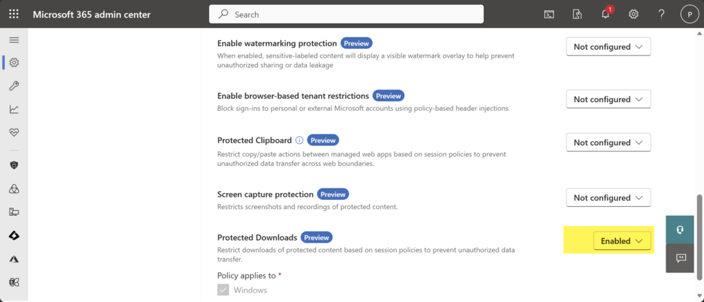
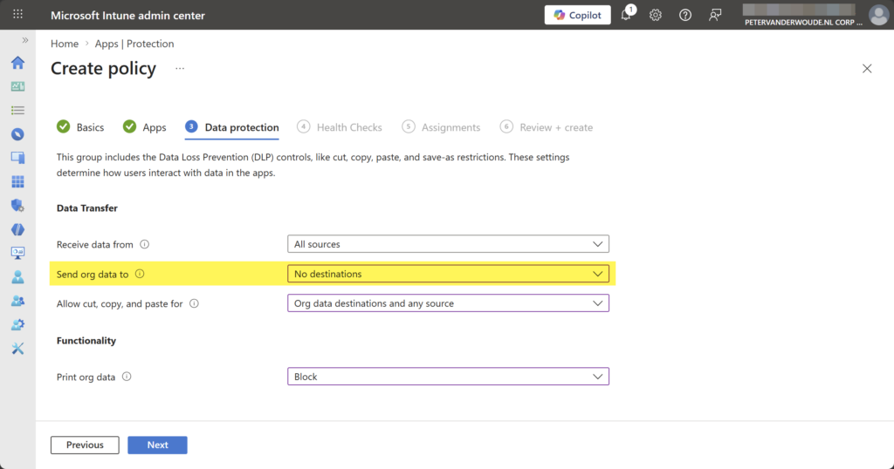
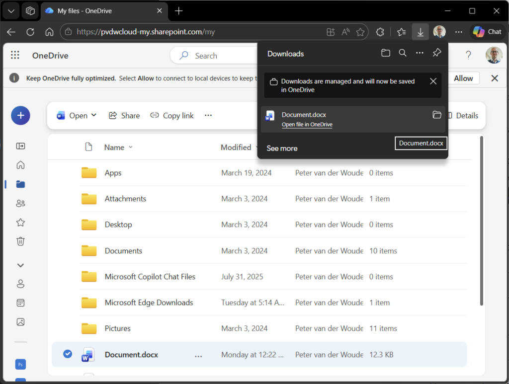

This week is all about a combination of new features. That combination of features is allowing MAM enrollment on managed Windows devices and protecting downloads in Microsoft Edge. Both features are relatively new features in Microsoft Edge, that are both currently still behind experimental feature flags. The first feature enables MAM enrollment on managed devices (also known as cross-tenant support) and the second feature protects the downloads in Microsoft Edge in that scenario. That feature makes sure that downloads are always redirected to a folder that is managed within the home tenant of the user account and that enforces organizational compliance. In practice that means that when the user downloads files, in that MAM enrolled profile on a device that is already managed by another organization device, the downloaded files are redirected to a new folder named Microsoft Edge Downloads in the OneDrive for Business of that user that belongs to that MAM enrolled profile. That makes sure that all the downloads are protected when being performed through the managed browser, and also that no data will be leaked to the already managed device. Protected downloads is part of the set of relatively new data protection features in Microsoft Edge. This post will provide a closer look on both features, the configuration, and the user experience.
Note: At this moment both features are still in preview and the feature flags must be specifically enabled.
Enabling protected downloads in Microsoft Edge
When looking at the configuration of protected downloads, it all comes down to a combination of app protection and the Microsoft Edge management service. On top of that, it is also required to enable the ability to allow MAM enrollment on managed devices. That feature, however, cannot be configured, and simply requires the enablement of the related feature flag at this moment. Even though protected downloads is a browser configuration, it is currently not available via other configuration providers, such as Microsoft Intune. That means that the configuration can be done via the Microsoft 365 admin center portal. The following number of steps walkthrough enabling protected downloads for all the assigned users.
- Open the Microsoft 365 admin center portal and navigate to Setting > Microsoft Edge
- On the Microsoft Edge for Business page, navigate to the Configuration policies tab and select an existing policy or create a new policy and select that policy
- Navigate to the Customization Settings tab, select the Security settings section, as shown below in Figure 1, and select Enabled with Protected Downloads to protect downloads for all assigned users of the policy
{kind=link}

Note: This configuration is currently only configurable for the Cloud policy type and not for the Intune policy type.
For that configuration to be successful, it is important that the applicable app protection policy is configured with a specific configuration for the data protection. Within that policy, the configuration can be done to protect the data within the apps. The following nine steps walk through the process of creating that app protection policy for Microsoft Edge on Windows, with the focus on the configuration that at least must be in place in combination with protected downloads.
- Open the Microsoft Intune admin center portal navigate to Apps > App protection profiles
- On the Apps | App protection policies blade, click Create policy > Windows
- On the Basics page, provide the basic policy information and click Next
- On the Apps page, select Microsoft Edge and click Next
- On the Data protection page, as shown below in Figure 2, specify at least the following information and click Next
- Send org data to: Select and No destinations, to specify the destination that users can send organization data to
{kind=link}

- On the Health Checks page, specify the required access requirements and click Next
- On the Scope tags page, specify the required scope tags and click Next
- On the Assignments page, specify the required assignment and click Next
- On the Review + create page, click Create
Note: This configuration can be applied in any applicable app protection policy. It is all about the sending org data.
Experiencing protected downloads in Microsoft Edge
When the configuration is applied, it is time to experience the newly created behavior. To experience that behavior, it is currently still required to enable the feature flags to allow MAM enrollment on managed Windows devices and to protect downloads in Microsoft Edge. Those features can be enabled via edge://flags/ and are named Allow MAM enrollment on managed devices and Enable Protected Downloads. At some point in time those features will become available directly in Microsoft Edge.
After enabling both feature flags, it is pretty straightforward to experience the behavior with protected downloads in Microsoft Edge. That can, however, only be done on a device that is already managed by another organization. With all the required configurations in place to use mobile application management on Windows, the user can sign in to Microsoft Edge and get the browser managed by another organization. A common example is a contractor that works on a device of the organization that is hiring them and relies on app management of their own organization, or vice versa. In the end, the user will have a managed browser and a managed device of different organizations.
The configuration of this post makes sure that all downloads within that managed browser are protected. That experience is shown below in Figure 3. For the sake of this example the download is also initiated from OneDrive, simply to get all the important items in a single screenshot. It clearly shows the Microsoft Edge Downloads folder that is automatically created for protected downloads, and it also shows the download prompt that indicates that the downloads are managed and saved in OneDrive.
{kind=link}

More information
For more information about protected downloads in Microsoft Edge, refer to the following docs.
Discover more from All about Microsoft Intune
Subscribe to get the latest posts sent to your email.